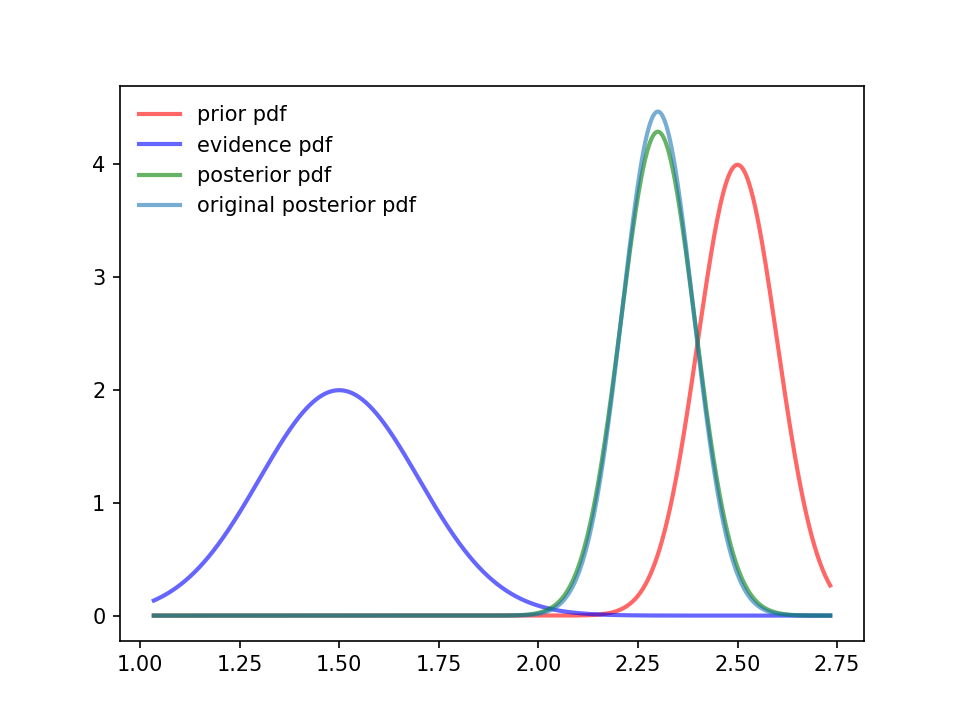
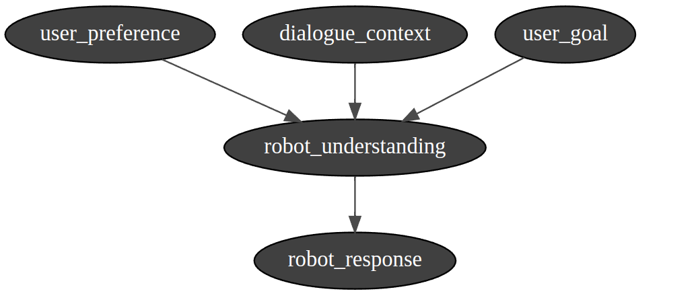
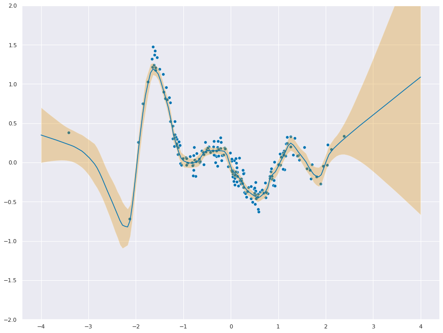
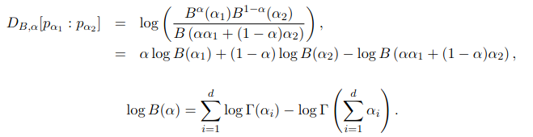
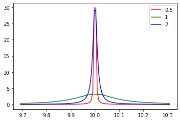
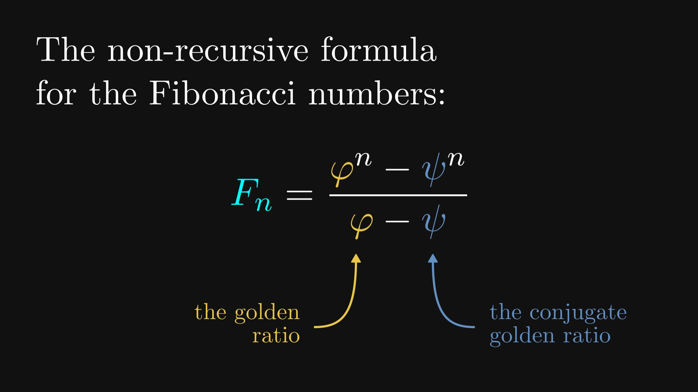
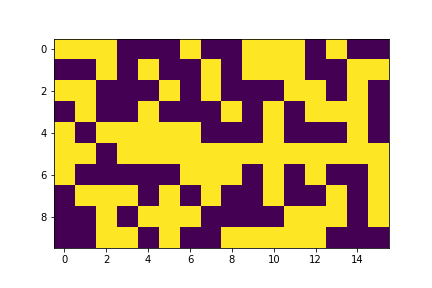
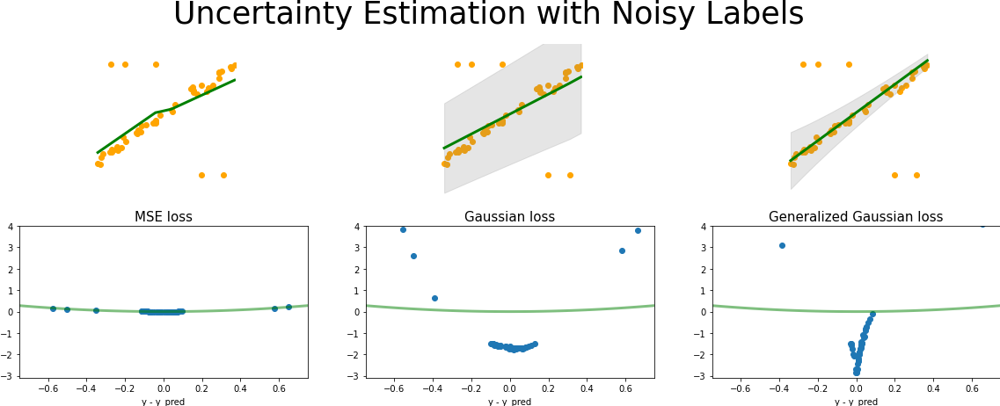
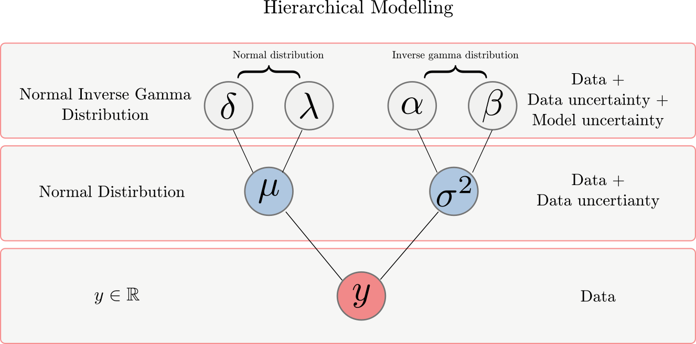
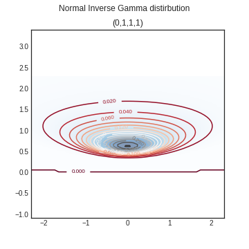

Python class for uncertain datatype
Uncertainty representation in Robotics
Examples of non-linear systems
Pytorch Implementation of FOMO model form Edge Impulse
ffmpeg different commands

Brief Explanation of Bayesian Network

MSE loss, logistic regression, softmax regression

Derivation and Code
Certification

Boxcox transformation

Plots and comparison to Exponential and notes on Power equations
Linear, Quadratic, Cubic

Paper reading

Generalized Gaussian Distribution/Exponential Power Distribution
Generalized Gaussian Distribution
Different types of quantization
Migrating Kelo Tulip to ROS2
Analysis
Interval score based distribution comparison
Running ros2 humble in ubuntu lxd container
Compile Latex file using Github Action
Learning Probability for Application
Comparison of Proper Scoring Rules
Visualization and Analysis
Neurips Competition Summary
How to use uncertainty estimates from deep neural networks
Deep Neural Network Personal Wiki
A explanation of different uncertainties in DNN
Reliability of DNN

Learning uncertainty for regression using higher order distribution
A explanation of dataset shifts in learning problems

Python plot Normal Inverse Gamma Distirbution
To understand Likelihood of distributions